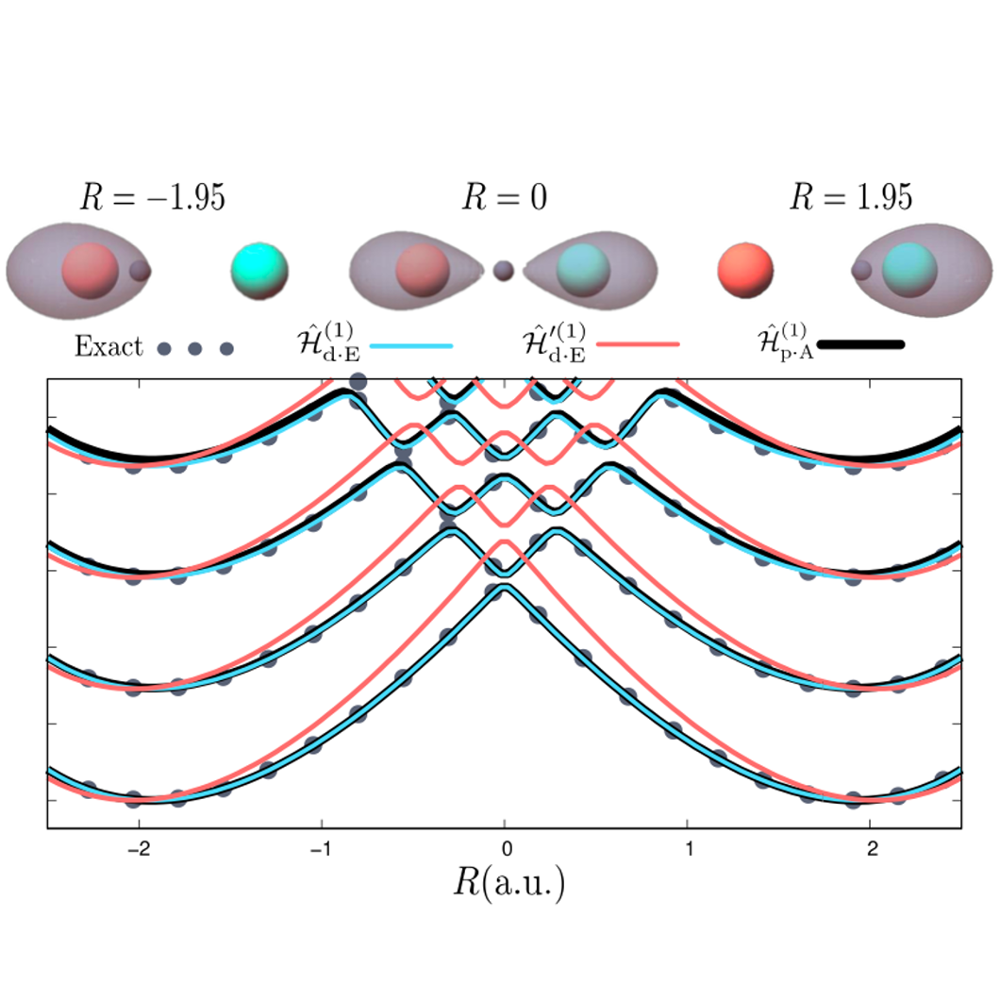
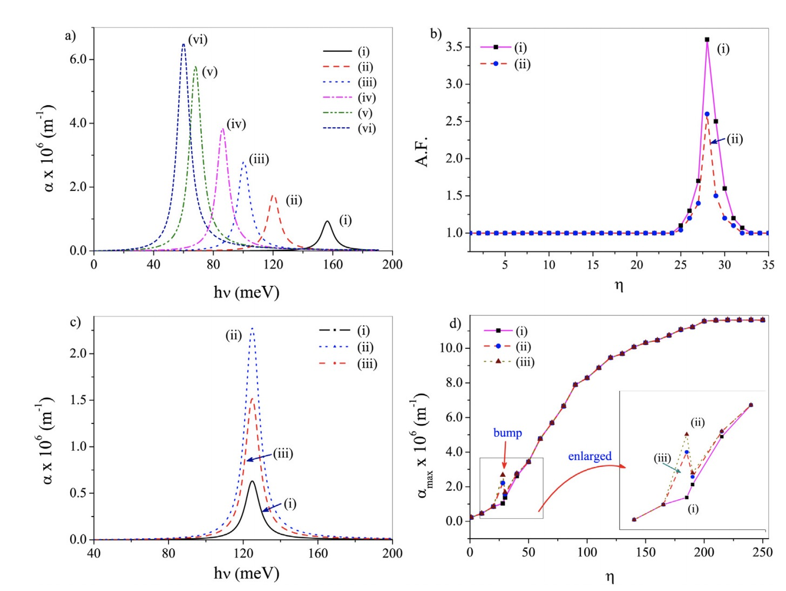
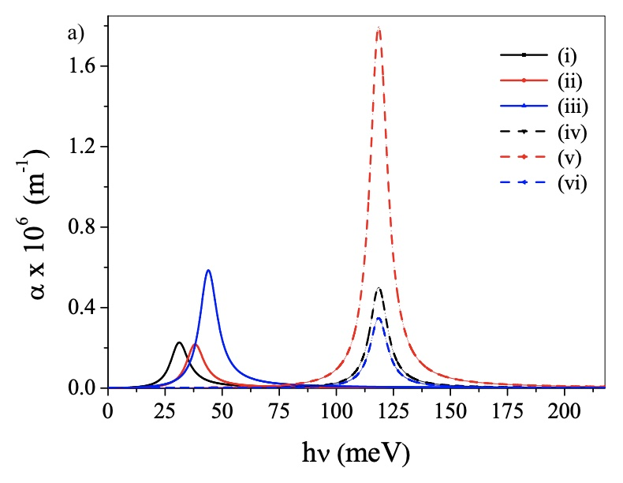
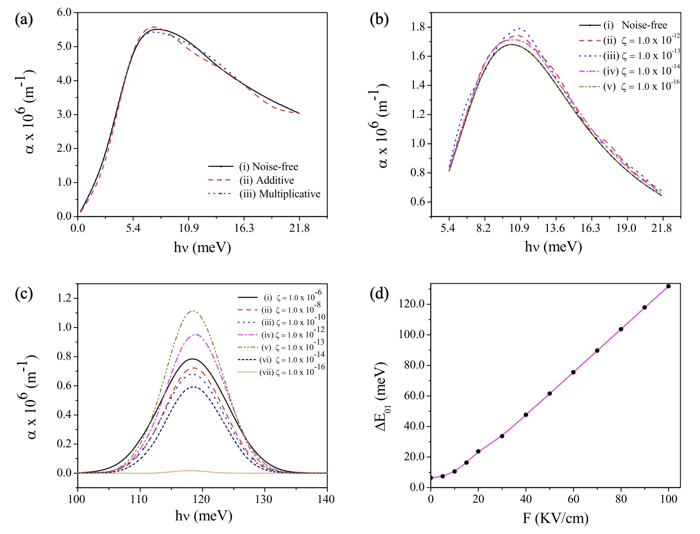
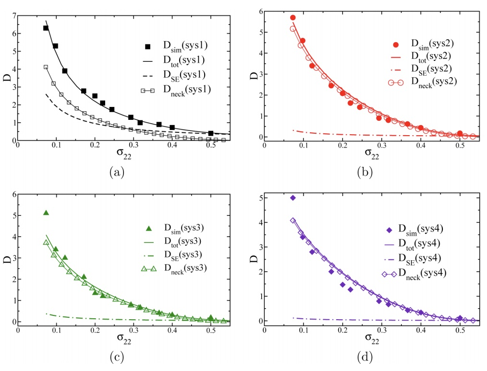

.jpeg)
.jpg)
%20(1).jpg)


Resonant Cavity Modification of Ground State Chemical Kinetics
L Lindoy, A Mandal, D Reichman *
The Journal of Physical Chemistry Letters
13 (28) 6580 (2022)
linkpdf20+Citations Journal
Cover



Resolving Ambiguities of the Mode Truncation in Cavity Quantum Electrodynamics
M Taylor, A Mandal, P Huo*
Optics Letters
47 (6) 1446 (2022)
linkpdf10+Citations

Theory of Vibrational Polariton Chemistry in the Collective Coupling Regime
A Mandal*, X. Li, P Huo*
The Journal of Chemical Physics
156 (1) 014101 (2022)
linkpdf50+Citations

Ab-initio Symmetric Quasi-Classical Approach to Investigate Molecular Tully Models
B Weight, A Mandal, P Huo*
The Journal of Chemical Physics
155 (8) 084106 (2021)
linkpdf10+Citations

Polariton Induced Conical Intersection and Berry Phase
M Farag, A Mandal, P Huo*
Physical Chemistry Chemical Physics
23 (31) 16868 (2021)
linkpdf20+Citations


Molecular Polaritons Generated from Strong Coupling between CdSe Nanoplatelets and a Dielectric Optical Cavity
L Qiu, A Mandal, O Morshed, M Meidenbauer, W Girten, P Huo*, A Vamivakas*, T Krauss*
The Journal of Physical Chemistry Letters
12 (20) 5030 (2021)
linkpdf20+Citations Journal
Cover

Cavity Frequency-Dependent Theory for Vibrational Polariton Chemistry
X Li, A Mandal* , P Huo*
Nature Communications
12 (1) 1315 (2021)
linkpdf150+Citations Featured
Article

Ring-Polymer Quantization of Photon Field in Polariton Chemistry
S Chowdhury, A Mandal , P Huo*
The Journal of Chemical Physics
154 (4) 044109 (2021)
linkpdf20+Citations Journal
Cover

Polarized Fock States and the Dynamical Casimir Effect in Molecular Cavity Quantum Electrodynamics
A Mandal*, S M Vega, P Huo*
The Journal of Physical Chemistry Letters
11 (21) 9215 (2020)
linkpdf50+Citations Journal
Cover

Polariton Mediated Electron Transfer via Cavity Quantum Electrodynamics
A Mandal*, T D Krauss*, P Huo*
The Journal of Physical Chemistry B
124(29) 6321 (2020)
linkpdf100+Citations Top Cited
at JPCB

Quasi-Diabatic Scheme for Nonadiabatic
On-the-Fly Simulations
W Zhou, A Mandal, P Huo*
The Journal of Physical Chemistry Letters
10 (22), 7062 (2019)
linkpdf20+Citations

Investigating New Reactivities Enabled by Polariton Photochemistry
A Mandal, P Huo*
The Journal of Physical Chemistry Letters
10 (18), 5519 (2019)
linkpdf100+Citations Top Cited
at JPCL

Quasi Diabatic Propagation Scheme for Direct Simulation of Proton-Coupled Electron Transfer Reaction
A Mandal, J S Sandoval, F A Shakib*, P Huo*
The Journal of Physical Chemistry A
123 (12), 2470 (2019)
linkpdf10+Citations

Symmetric Quasi-Classical Dynamics With Quasi-Diabatic Propagation Scheme
J S Sandoval, A Mandal, P Huo*
The Journal of Chemical Physics
149 (4), 044115 (2018)
linkpdf20+Citations

Investigating Photoinduced Proton Coupled Electron Transfer Reaction using Quasi Diabatic Dynamics Propagation
A Mandal, F A Shakib, P Huo*
The Journal of Chemical Physics
148 (24), 244102 (2018)
linkpdf20+Citations


Modulating Nonlinear Optical Properties of Impurity Doped Quantum Dots via the Interplay Between Anisotropy and Gaussian White Noise
S Sarkar, A Ghosh, A Mandal, M Ghosh*
Superlattices and Microstructures
90, 297-307 (2016)
linkpdf20+Citations

Influence of Position-Dependent Effective Mass on the Nonlinear Optical Properties of Impurity Doped Quantum Dots in Presence of Gaussian White Noise
A Ghosh, A Mandal, S Sarkar, M Ghosh*
Optics Communication
367, 325-334 (2016)
linkpdf20+Citations

Analyzing Total Optical Absorption Coefficient of Impurity Doped Quantum Dots in Presence of Noise With Special Emphasis on Electric Field, Magnetic Field and Confinement Potential
A Mandal , S Sarkar, A Ghosh, M Ghosh*
Chemical Physics
463, 149-158 (2015)
linkpdf20+Citations

Diffusion of Small Solute Particles in Viscous Liquids: Cage Diffusion, a Result of Decoupling of Solute–Solvent Dynamics, Leads to Amplification of Solute Diffusion
S Acharya, M K Nandi, A Mandal, S Sarkar, S M Bhattacharyya*
The Journal of Physical Chemistry B
119 (34), 11169-11175 (2015)
linkpdf10+Citations